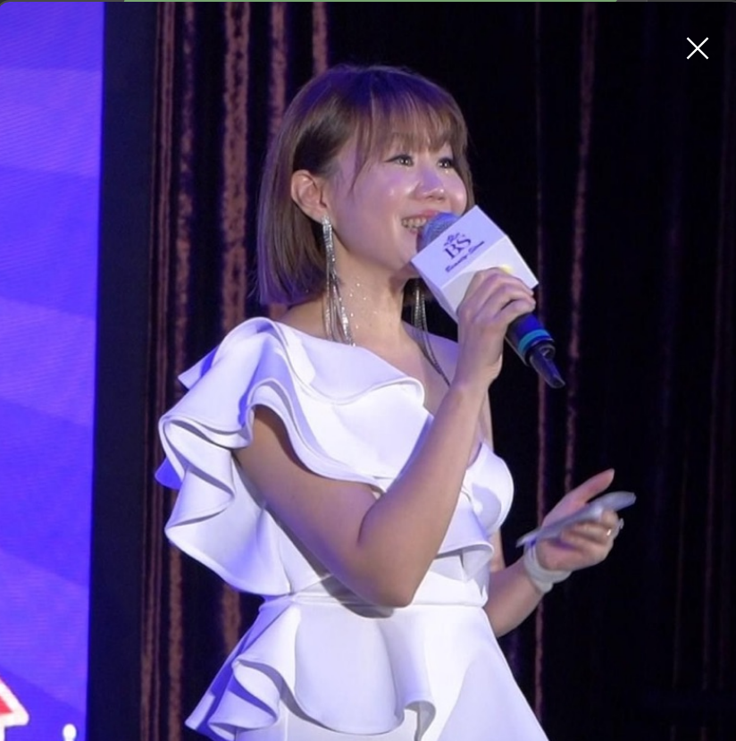
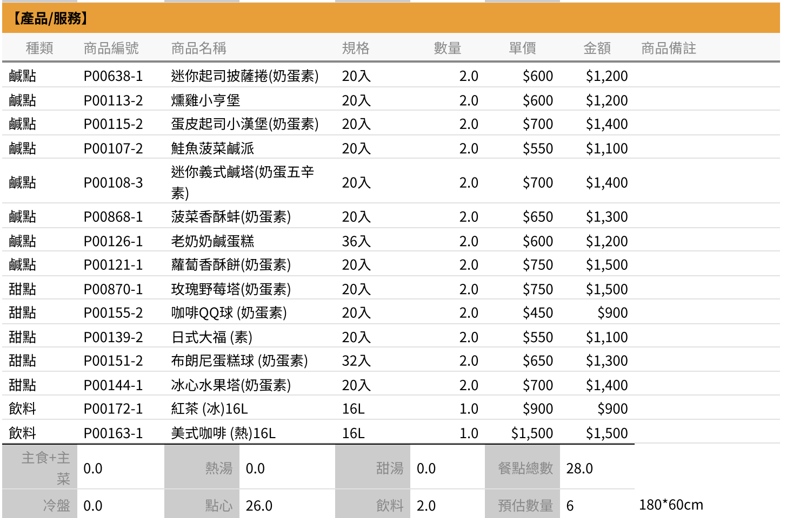
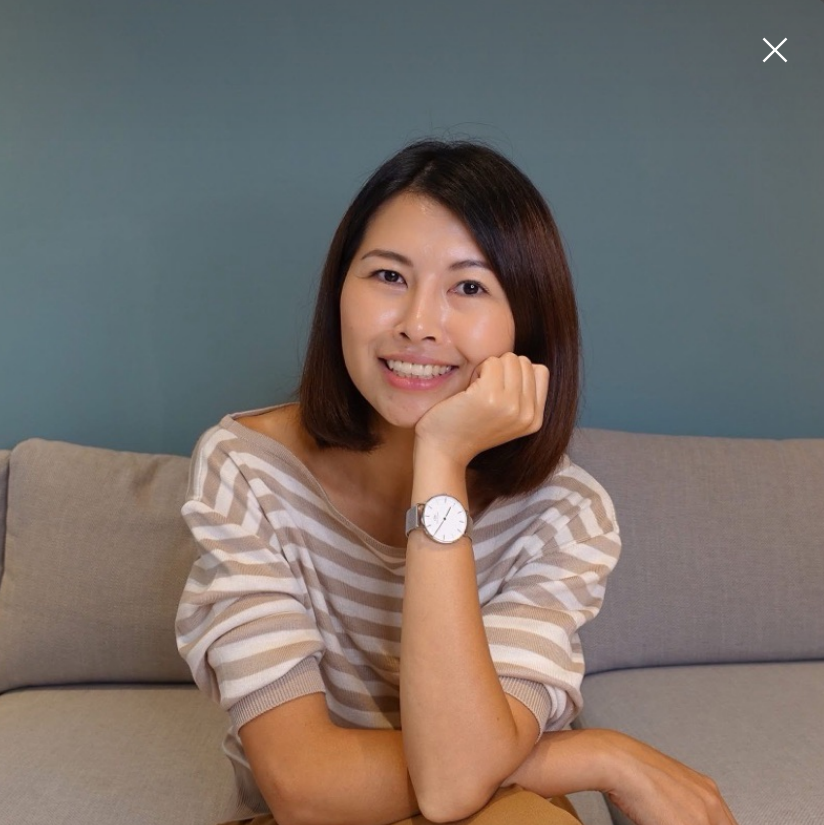

窩的家集團 三重新總部 開幕日
今天這場活動要做三件事：
①
慶祝新總部開幕剪綵
10:45 騎樓紅布條剪綵儀式，5 位嘉賓站台
②
4 大品牌同日亮相
住商（1F）· 設計（2F）· 優式（3F）· 凌群（4F）
③
讓夥伴客戶認識一條龍服務
買賣 → 設計 → 租賃 → 社宅，四條業務線串起來
🕐 當天時間主軸
👥 今天誰會來？
① 上午：住商總部 + 中信夥伴
1F 住商正義國小加盟店的合作體系。小吳哥另外還有一間蘆洲中信房屋（品客不動產），兩邊夥伴都會來。
- 李杰峰副總（住商總部）· 致詞 + 10:45 剪綵後贈匾主角，手上會有匾
- 邱福臨店長（合作好夥伴）· 剪綵嘉賓、致詞順位第 2
- 住商總部其他代表（陪同李副總）
- 蘆洲中信房屋夥伴（小吳哥另一間店的同仁）
接待窗口：小吳哥本人（李副總層級）
→ 其他住商/中信夥伴由 1F 業務自然招呼
② 優式店東圈
優式租售是我們 3F 加盟的品牌，合作好夥伴。上午 10:00–11:00 主力客群。
- Teresa 老師（優式總部代表）· 剪綵嘉賓之一，到場直接帶給 TINA
- 優式各加盟店店東
接待窗口：TINA
→ TINA 只接優式系統，不接 BNI
③ 鄰居／潛在客戶
掃街發名片邀來的鄰居、過路被吸引進場的客人。凌群辜總團隊（我們社宅業務借牌的合作方）會過來吃喝祝賀，約 11:00–11:30 到。
- 平安街周邊鄰居（4/24 傍晚掃街發名片後邀約）
- 過路被吸引進來的客人（全天陸續到場）
- 辜博鴻（凌群總經理，茶會贊助者）· 約 11:00 到，主動道謝
- 吳沂修 🍗（辜總員工）· 約 11:30 到
接待窗口：入口招呼 + 機動 A/B
→ 主要引導到 1F、2F 看服務介紹
→ 辜總到場立刻 cue 瓊安
🎯 今天全員 3 大任務
1
⭐ Google 五星好評
全場最重要 KPI，直接影響店家 SEO 排名。QR Code 共 6 個放各樓層。目標 30 則以上。
💬 話術示範
入口招呼：「今天剛好是我們開幕，覺得場佈或服務還不錯的話，可以幫我們掃這 QR Code 留 5 星嗎？30 秒就好。」
樓層導覽：「剛剛介紹對您有幫助，掃一下 QR Code 給個 5 星對我們同仁是很大鼓勵。」
2
🚦 1F 人流管制
1F 同時在場上限 25 人。超過就往 2/3/4F 導覽帶，不往外面帶（外面熱且影響平安街馬路動線）。機動 A、B 負責盯人數。
3
😊 保持微笑服務
當天人多可能影響平安街馬路動線，鄰居會在外面看 — 鄰居的觀感就是未來的口碑。全員保持微笑與禮貌。鄰居或客人不開心時主動上前協調、不讓問題擴大。解決不了再找瓊安。
🙋 當天找人原則
瓊安當天會很忙，請先自己處理、真正緊急才找她。
✅ 日常問題 → 自己處理 or 找機動 A/B
- 茶水/餐點不夠 → 自己補 or 找茶水補給同仁
- 客人問路、找廁所 → 直接帶路
- 物料位置、補位 → 找機動 A/B
- 身份辨識不確定 → 先客氣招呼再說
🚨 真正緊急 → 找瓊安
- 嘉賓臨時變動（致詞人沒到、剪綵嘉賓缺席）
- 客訴升級（同仁處理不了的）
- 流程斷點（音響故障、主持人不在位）
- 安全問題（有人身體不適、設備危險）
📅 週五任務（4/24 · 今日排程）
10:30
業務例會（本次會議）
投此手冊給全員看、討論任務分配
🧹 會議結束後 · 全員大掃除
業務例會結束後，所有夥伴一起整理辦公室。開幕前要給客人看到乾淨的樣子，拜託大家認真做一次。
✅ 個人座位整理
- 位置不要亂七八糟，拜託整理整齊
- 該帶回家的東西帶回家
- 該藏起來不能給客人看的通通收好
🔧 維修／壞掉／髒掉 → 找小呂
- 辦公室內還有沒有貼綠色維修標籤的，找小呂對一下
- 有東西壞掉或髒掉的，跟小呂說
🏢 各樓層全面清潔
- 打掃自己座位
- 各樓層位置都檢查仔細
- 明天客人一進門就要是乾淨明亮的感覺
🚶 17:30 全員掃街（帶名片）
- 掃除結束後 17:30 全部人一起去掃街
- 帶名片出門，挨家挨戶發給平安街周邊鄰居
- 這是鄰居認識我們的關鍵動作，不能少人
💪 請大家熱情一點！
開幕當天人會很多，一定會影響平安街交通動線（車位、出入口、噪音），所以今天掃街要先跟鄰居打招呼、表達歉意，把關係打好。
話術方向：「我們是隔壁的窩的家，禮拜日要開幕，當天人會比較多，車進車出可能會有點吵雜，先跟您說不好意思！也歡迎您來現場吃吃喝喝，有茶點有飲料～這是我的名片。」
把鄰居邀到現場比發名片重要，人來了才有機會變客戶。遇到態度不好的鄰居也要保持禮貌，他們明天還要住在那。
👤 我的任務（選你的名字）
💡 合作廠商（Ivy、橘子、元氣先生）看「合作廠商」分頁
👆
請先在上方選你的名字
會顯示你今天的完整時段任務卡
🤝 合作廠商
開幕當天有三類外包廠商：主持人、外匯餐點、攝影。他們不是窩的家同仁，請記得臉、知道找誰對接。下方三個分頁分別介紹。

Ivy 艾薇
主持人
全天活動主持，上下午兩場開場 + 結語
📢 請大家協助 Ivy
瓊安會全程跟在她旁邊協助。但如果 Ivy 臨時 cue 任何人（點你名上台、請你做某事），請立刻配合、不要愣住或推託——這是節奏最怕被打斷的環節。
她負責的流程
- 10:00 活動前 5 分鐘預告來賓移步觀禮區
- 10:30 開場 → 唱名貴賓 → cue 致詞 4 位（李副總 → Teresa → 邱店長 → 小吳哥壓軸）
- 10:45 剪綵主持：引言 → cue 合照 → cue 動剪 → cue 全體大合照
- 11:00 邀請來賓進 1F 茶點、口頭帶 Google 五星好評、預告下午場
- 13:00 下午開場、唱名 BNI 三代表、cue 致詞
- 13:15 四條 CTA 結語：買房 / 裝修 / 出租 / 社宅
👤 對口同仁：瓊安（場控）
📍 整天站 Ivy 旁邊，cue 節奏、遞手卡、處理突發
🍱 便當列入份數 · 不吃海鮮
元氣先生 Mr.Ogenki
外匯餐點廠商
上午茶點供應 · 09:00 送達 / 17:30 回收
📢 請大家協助對接
這是外匯廠商，我們付錢請他們送餐。收貨時請務必跟司機核對餐點明細（13 箱點心、2 桶飲料、共 28 盤），少送、破損當場提出，不要簽收後才發現。冷藏品（水果塔、野莓塔）要馬上放冰箱。
📋 餐點明細（核對用）

👆 09:00 接貨時拿這張對著箱子逐項打勾
他們提供的內容
- 09:00 送達：13 箱點心、紅茶 16L、美式咖啡 16L
- 共 28 盤：8 款鹹點 + 5 款甜點
- 司機會各款先幫擺一盤，剩餘 13 盤由我們補充擺盤
- 17:30 回收：司機回來取餐具器具
📢 全員配合事項
今天有兩位攝影廠商：子璇（長+短影音，DJI 單眼+手機） 和 橘子（短影音，手機）。
請大家聽她們調度——她們可能會請你走位、看鏡頭、重做一次動作，這都是為了拍出好素材，請配合。
子璇
攝影師 · 主力
長＋短影音拍攝（DJI 單眼 + 手機）
她的角色
- 全天主力攝影師，聽她調度走位
- 長影音（活動紀錄片）主拍：邊拍邊錄，動態+靜態交錯，後製剪成 3-5 分鐘官方紀錄影片
- 同時負責短影音 6 支的主鏡頭素材（DJI + 手機）
- 會拍剪綵、致詞、導覽、茶敘、合照
她的角色
- 協助拍攝短影音（手機直拍）
- 配合子璇一起調度，重點鏡頭不漏拍
- 收工時間 13:00–14:00（便當是否列入 4/24 早會確認）
👤 對口同仁：拍攝指揮（會議分派決定）
📍 職責：帶兩位攝影走位、告訴她們下個重點鏡頭在哪、確保不漏拍
🎬 重點畫面：剪綵騎樓正面+側面、小吳哥接匾特寫、致詞近景、LOGO 背板入鏡、茶敘人群、各樓層導覽搭配輪播
💡 廠商對接原則
廠商不熟我們同仁，他們只會找對口窗口溝通。所有廠商有狀況第一時間找 瓊安（場控），瓊安再分派給對應同仁處理。
🎯 崗位總覽｜21 個崗位在做什麼？
給每一位夥伴看的：這頁列出當天所有崗位的工作內容、時段跟適合特質。請先快速瀏覽，想一下哪個崗位自己做得來、哪個想試試看，再到下一頁「排班指派」認領。
每個崗位下面都寫了「適合誰」，不是限制，是給你判斷用的。真的不確定就挑 2-3 個意願崗位，瓊安會幫忙調配。
⚠️ 原則：日常問題先找機動 A/B、同部門同仁、組長；真正緊急（嘉賓問題、客訴升級、流程中斷）才找瓊安。
🎯 指揮組
全場節奏的掌舵手
時段09:00 起全程關鍵節點
- 站在主持人 Ivy 旁邊，掌控節目節奏
- 通知各組上場：剪綵、致詞、導覽出發
- 突發狀況即時判斷處理（嘉賓問題、客訴升級、流程中斷）
適合反應快、熟悉全場流程、敢當機立斷的人（此崗位瓊安本人站）
📌 術語 cue：場控術語，輕聲提醒或手勢示意「該你了」。例：10:30 到了，場控 cue Ivy 開場致詞。
時段10:00 – 14:00（攝影師只有 4 小時）
- 跟子璇＋橘子討論分鏡與拍攝內容（不是走位嚮導，是內容決策者）
- 參考「🎬 短影音」分頁的 6 支影片腳本，決定優先順序
- 盯時間：攝影師 10:00 開工、14:00 收工，要把 6 支影片的必要素材都拍完
- 確保剪綵、致詞、接匾等最重要時刻不漏拍
適合看得懂腳本分鏡、會判斷優先順序、能跟廠商快速決策的人
📹 兩種影音輸出
・長影音（活動紀錄片）：子璇主拍，邊拍邊錄，動態鏡頭 + 靜態畫面交錯。完整紀錄整場活動氛圍，事後剪成 3-5 分鐘官方紀錄影片。
・短影音 6 支：子璇＋橘子合作，按腳本分鏡拍攝。每支 30 秒，社群推廣用。
📸 必拍畫面檢查表（逐項跟攝影師確認）
10:00–10:30 迎賓
・入口紅毯 / 簽到處（空景 + 來賓簽到動作）
・掃 QR Code 五星好評的畫面（客人低頭掃手機）
・全員迎賓合影（業務部整齊站騎樓外歡迎）
10:30–10:45 致詞
・Ivy 主持全景＋特寫
・每位致詞者獨立近景（4 位：李副總、Teresa、邱店長、小吳哥）
・觀眾反應鏡頭（點頭、鼓掌、笑）
・贈匾三段：① 李副總雙手遞匾預備 ② 雙方握匾瞬間 ③ 合照留影
10:45–11:00 剪綵（最重要）
・剪綵 5 人就位站好（還沒剪）· 正面＋側面
・遞手套、遞金剪的動作（業務部女同仁優雅動作）
・剪下去的瞬間（紅布條斷、5 人同步）
・剪完 5 人舉剪刀合照＋全體大合照
・LOGO 背板入鏡、整個騎樓氛圍
11:00–11:30 茶敘／導覽
・茶點桌面擺盤（元氣先生點心開場照）
・茶敘人群互動（帶 LOGO 背板入鏡）
・各樓層導覽片段（1F 住商、2F 設計、3F 優式、4F 凌群／錄播）
・輪播螢幕畫面＋人在聽
6 支短影音腳本拍攝
・影片 1：小呂在 2F 辦公區（詳見短影音分頁）
・影片 2：忠豪 / 馬丁在 3F 辦公區
・影片 3：邱店長從 1F 大門走入
・影片 4：小吳哥從門口跑到 4F
・影片 5：20 位新人快問快答
・影片 6：屋主見證（走廊 + 房內）
其他加值鏡頭（時間夠就拍）
・辜總到場握手寒暄（他 11:00 到）
・吳沂修到場（約 11:30）
・合作廠商入場（住商總部代表、優式店東、BNI 代表）
・全體員工大合照（活動尾聲）
・空景：外觀招牌、騎樓布置、各樓層環境
時段全天
- 領公司 DJI Pocket 4，到處補拍 B-roll 素材
- 跟子璇、橘子錯開角度，不搶主機位
- 重點：迎賓、致詞觀眾反應、剪綵側面、茶敘氣氛、各樓層氛圍
適合會用運動相機／穩定器、眼睛會找畫面、不怕走動的人
🤝 接待組
客人對公司的第一印象
時段10:00 起持續到剪綵後
- 門口迎賓、帶位引導進場
- 簽到表核對姓名（大展分會 16 人、剪綵/致詞嘉賓）
- 請客人掃 Google QR Code 留五星評論
- 指引洗手間、茶水位置
適合笑容自然、口條清楚、不怕跟陌生人互動的業務同仁
🚨 最重要任務：隱藏大咖通報
有些貴賓很大咖但很低調，不願意致詞、也不透漏會不會來、幾點來。
簽到時如果認出大咖（或看到重要名字），請私下 cue 瓊安 —— 瓊安會跟主持人 Ivy 安排適當時機介紹嘉賓。
⚠️ 不要直接公開宣布、不要當場要求致詞。主持節奏必須由瓊安判斷。
📌 已知特殊通報：辜總 + 吳沂修（必 cue 瓊安）
· 辜博鴻（凌群總經理、茶會贊助者）· 預計 約 11:00 到場，剛好省午餐。明確表示不致詞、就是來吃喝祝賀。
· 吳沂修 🍗（辜總員工）· 預計 約 11:30 到場（早上有行程）。
簽到看到這兩位 → 立刻 cue 瓊安 + 主持人 Ivy，瓊安會請 Ivy 在適當時機點名致意。
時段10:00–13:00
- 專門接待小吳哥 BNI 圈的貴賓
- 招呼、引導、介紹環境
- 確保 BNI 貴賓全程被照顧到
適合認識 BNI 成員或小吳哥人脈圈的同仁優先（建議小吳哥／忠豪／WEIWEI）
時段10:00–13:00
- TINA 專責，接待優式店東（Teresa、其他店東）
- 熟絡老朋友、介紹 3F 新空間
- 促成店東跟集團高層互動
適合TINA 固定（本身熟悉優式店東）
時段全天遊走
- 全場遊走、哪裡缺人補哪裡
- 發現客人沒人招呼就主動上
- 協助其他同仁的日常小問題（補位、引路、答客問）
適合觀察力強、眼裡有事、閒不住的人
時段全天遊走
- 與機動 A 分工，顧另一側樓層
- 補位、遞東西、臨時任務
- 回報場內動態給場控
適合做事主動、會自己找事做、不等指令的人
✂️ 剪綵組
10:30–10:45 的 15 分鐘高光
時段10:30–10:45
- 把剪綵嘉賓從休息區引導到剪綵定位
- 排好站位順序（見下方站位圖）
- 剪綵後引導離場拍合照
適合動線感好、不怕面對高層長輩、口氣得體的人
📌 剪綵站位（面向鏡頭／騎樓外）：
紅布條──────────────────
Teresa → TINA → 小吳哥（中央） → 邱福臨 → 李杰峰副總
手套與金剪由左側開始遞。
時段10:45 剪綵瞬間
- 托盤遞白手套給每位剪綵嘉賓（從左至右）
- 配合嘉賓順序，不能卡住節奏
- 剪綵結束收回手套
適合建議女同仁、儀態佳、動作優雅
時段10:45 剪綵瞬間
- 托盤遞金剪給每位剪綵嘉賓（從左至右）
- 與遞手套同仁配合好順序
- 剪綵完收剪刀歸位
適合建議女同仁、儀態佳、動作穩不慌
🏢 樓層導覽（全員共同責任）
不指派、見人就接
樓層導覽不設專責崗位，全員共同責任。客人上任何一層樓，
該樓層附近同仁立刻主動接待，講解自己樓層業務：
- 1F 住商：買賣仲介服務，搭輪播影片
- 2F 設計：室內設計 + 自營工程（不外包），搭輪播簡報
- 3F 優式：租賃仲介 + 包租代管，搭輪播影片。想開加盟店轉給 TINA
- 4F 凌群／錄播：前半品牌錄播、後半凌群社宅包租代管
提醒：
· 導覽時口頭帶 Google 五星好評 QR Code（立牌擺各樓層桌面，見下方示意圖）
· 自己不熟的樓層業務就喊機動 A/B 過來支援
· 不要把客人晾在樓上沒人理
⭐ Google 五星好評桌牌示意
各樓層桌面會擺這張立牌（共 6 個），導覽時主動指給客人：「今天開幕，可以幫我們掃 QR Code 留個 5 星嗎？」
上面有窩的家 LOGO + 團隊照 + QR Code，客人 30 秒就能完成。
🍱 餐飲組
從早餐盤到晚上回收
時段09:00 送達 / 17:30 回收
- 09:00 在門口接元氣先生外送
- 核對 13 箱點心數量、品項（明細在合作廠商頁）
- 簽收、指引司機卸貨位置
- 17:30 留守配合司機回收餐具器材
適合能準時到場、細心核對數量的人
時段09:00–10:00
- 協助 A 組擺盤、分配到各樓層
- 冷藏品（水果塔、野莓塔）即時放冰箱
- 確認擺放位置乾淨美觀
適合動作快、有擺盤美感、不怕動手的人
時段全天持續
- 隨時補茶水、補餐點
- 清理空盤、整理桌面
- 保持場地整潔不狼狽
適合眼裡有事、不怕雜務、愛乾淨的人
時段前置訂購｜12:00 接貨
- 活動前統計在場人數、訂便當
- 12:00 接貨、核對數量
- 注意：Ivy 跟瓊安不吃海鮮
適合行政能力好、會記特殊飲食需求的人
📌 固定角色
已定人選，不需排班
時段全程
說明已由 Ivy 擔任，不需指派。對接窗口瓊安。
時段10:30 / 13:00
說明執行長本人，不需指派
🏆 致詞嘉賓與貴賓
給全員讀的：以下是 4/26 開幕當天會到場的重要嘉賓。請記臉、記身份、記位階，看到他們主動打招呼、優先照顧。迎賓、貴賓接待、場控、動線引導崗位務必熟讀。
🎤 上午場致詞（10:30–10:45）4 位，依序上台 · 4/24 早會新版
🎤 首位致詞
✂️ 剪綵右 1
🏆 剪綵後贈匾
接待：住商總部最高層級，由 小吳哥本人親自接待。迎賓見到請通報小吳哥，不要塞給接待組。
致詞首位：代表住商總部，致詞完不下台 → 等剪綵 → 剪綵完接著贈匾儀式。
🎤 致詞
✂️ 剪綵左 1
接待：到場直接帶給 TINA（優式組接待）。
新增致詞：4/24 早會決議 Teresa 也致詞，代表優式品牌祝賀加盟店開幕。
3
邱福臨 店長
住商不動產 · 正義國小加盟店 店長（合作好夥伴）
🎤 致詞
✂️ 剪綵右 2
稱呼：邱店長。
🎤 壓軸致詞
✂️ 剪綵中央
🏆 接匾
🎤 下午致詞
整天主角，重要畫面他都要在。
致詞壓軸：第 4 位上台、致詞完不下台 → 直接帶到剪綵位置（中央）→ 剪綵完接李副總贈匾。
✂️ 剪綵嘉賓（10:45）5 人站台，依順序排位
站位順序（面向鏡頭／騎樓外）：
Teresa ＞ TINA ＞ 小吳哥（中央） ＞ 邱福臨 ＞ 李杰峰副總
遞手套、遞金剪由左側（Teresa 端）開始。動線引導同仁務必記此順序。
✂️ 剪綵站台（左 1）
接待：到場直接帶給 TINA（優式組接待）。
2
蕭靜芳（TINA）
優式租售 三重窩的家加盟店 店長（本集團同仁）
✂️ 剪綵站台（左 2）
同仁
任務：優式組貴賓接待專責（不接 BNI）。
✂️ 剪綵中央
🎤 主角
站位：5 人最中央，整場活動主角。
4
邱福臨
住商不動產 · 正義國小加盟店 店長（合作好夥伴）
✂️ 剪綵站台（右 2）
🎤 上午致詞
稱呼：邱店長。
✂️ 剪綵站台（右 1）
🎤 上午致詞
🏆 剪綵後贈匾
接待：住商總部最高代表層級，由 小吳哥本人親自接待。
剪綵完接著贈匾儀式：李副總把「開幕誌慶」匾交給小吳哥、雙方握匾合照。
🍷 到場祝賀（不致詞、不剪綵）受邀貴賓，特殊接待
辜博鴻 + 吳沂修 🍗
凌群不動產（總經理 + 員工）
社宅業務借牌合作方
到場時間：辜總約 11:00 / 吳沂修約 11:30，整體 11:00–11:30 區間到。
身份：凌群是我們社宅業務借牌合作方，辜總贊助今天茶會（$10,000 元氣先生外燴）。
4/21 LINE 表態：「不用安排致詞，過去吃吃喝喝打屁、祝賀開幕」。
稱呼：辜總。見到本人請主動道謝贊助茶點，立刻 cue 瓊安+ Ivy，瓊安會請 Ivy 在適當時機台上點名致意。
🎤 下午場致詞（13:00–13:15）小吳哥 + 王理事長 + 各分會主席
🎤 下午首位致詞
下午場首位，開場三年前兩人店面 → 30 人團隊 → 一條龍。
🎤 下午致詞
公會理事長
身份：租賃公會新北理事長，下午場列為特別來賓。
3
BNI 三位代表
邱愛莉 · 呂昀宣 · 諸葛俊鳴
🎤 下午致詞
王理事長之後，邱愛莉、呂昀宣、諸葛俊鳴 三位依序上台致詞。
完整介紹見下方「🤝 下午場 BNI 代表貴賓」三張卡片。
🤝 下午場 BNI 代表貴賓（致詞者）王理事長後依序上台致詞

邱愛莉
House123 執行長 · 華都更分會發起人
BNI 代表
稱呼：本人確認稱呼「邱愛莉」（2026-04-20 確認）。
身份：House123 執行長，房產知名人物。
呂昀宣（昀宣）
晨諾創意 執行長 · BNI 大展分會主席
BNI 代表
身份：BNI 大展分會主席。大展分會 16 位夥伴名單見下方。
BNI 代表
身份：BNI 安信分會代表。
接待：主要由 小呂 負責對接安信分會（小吳哥當天會很忙，當備援）。
🎫 大展白金分會 · 下午 12:00 場忠豪的分會夥伴（忠豪 = 大展分會成員）
📌 迎賓請注意：看到以下名單的人報到，立刻引導找忠豪（忠豪應該會自己接待，這份名單供迎賓核對身份用）。
他們是下午 12 點場次，由 BNI 大展分會主席呂昀宣帶領，共 16 人（含攜伴）。
報到名單（接龍順序）
忠豪 +2
美鳳 +1
昀宣 +1
子靚 +1
富貴 +1
伯超 ×1
世豪 +1
金鈴 +1
國龍 +1
雀伶 +1
宏南 +1
乙仙 +1
俊宇 +1
Cama +1
韋旱 +2
韋成 +1
📍 報到地點：三重區平安街 59 號 · 📞 洽詢：0916-332-312（忠豪）
❌ 無法到場（原邀請但已確認缺席）
劉貞君 理事長（中華民國租賃住宅服務商業同業公會全國聯合會）
原規劃列剪綵嘉賓之一，已確認無法到場。
🚨 簽到夥伴最重要任務 · 隱藏大咖通報
除了上方明列名單，還可能有很大咖但很低調的貴賓到場 —— 他們不會事先說要來、不願致詞、也不透漏身份。
簽到時若認出大咖（或簽到表看到重要名字）請私下 cue 瓊安，瓊安會跟主持人 Ivy 安排合適時機在台上介紹。
⚠️ 不要公開宣布、不要當場要求致詞，節奏由瓊安和 Ivy 判斷。
📌 全員請注意
① 看到上方明列嘉賓入場，迎賓立刻通報對應接待（李副總 → 小吳哥本人；Teresa → TINA；辜總 → 瓊安；大展分會 → 忠豪）。
② 不確定身份先客氣詢問「請問您是？」再轉介，不要讓嘉賓站在入口超過 30 秒沒人接待。
③ 辜總親自到場時，茶水同仁請主動遞上茶飲。
📋 報名名單（Ragic 即時）
合計 34 位來賓（Ragic 報名 17 + 大展分會 16 + 額外邀約 1）
迎賓簽到時拿這份對名字。下午場二已併入場一。
🕐 下午場一 13:00（BNI 場）
22 人（含大展 16）
| 姓名 | 身份 | 單位 | 電話 |
|---|
| 高璿秝 |
🧰 合作夥伴/廠商 |
艾柏漢廚具 |
0955553122 |
| 邱金鈴 |
🤝 BNI夥伴 |
中信房屋樹林冠軍團隊 |
0909895478 |
| Elaine |
📚 瘋理財學員 |
中學教師 |
0918659197 |
廖文藝
➡️ 忠豪大展分會 |
🤝 BNI夥伴 |
BNI大展分會/宏億室內裝修工程有限公司 |
0913930999 |
何璟彤
➡️ BNI 夥伴 |
🤝 BNI夥伴 |
富士達保經 |
0985573937 |
陳宜亭
WEIWEI 邀請 · 實際 15:00 才到 |
🧰 合作夥伴 |
新同心融資貸款 |
— |
| ── 以下為 BNI 大展分會接龍（忠豪邀請·未走 Ragic 報名·共 16 人，約 12:30 起陸續到） ── |
忠豪 +2
BNI 大展 · 窩的家同仁 |
🤝 BNI大展 |
窩的家（召集人） |
0916332312 |
美鳳 +1
BNI 大展 |
🤝 BNI大展 |
— |
— |
昀宣 +1
BNI 大展 · 分會主席 |
🤝 BNI大展 |
晨諾創意執行長 |
— |
子靚 +1
BNI 大展 |
🤝 BNI大展 |
— |
— |
富貴 +1
BNI 大展 |
🤝 BNI大展 |
— |
— |
伯超 ×1
BNI 大展 |
🤝 BNI大展 |
— |
— |
世豪 +1
BNI 大展 |
🤝 BNI大展 |
— |
— |
金鈴 +1
BNI 大展 |
🤝 BNI大展 |
— |
— |
國龍 +1
BNI 大展 |
🤝 BNI大展 |
— |
— |
雀伶 +1
BNI 大展 |
🤝 BNI大展 |
— |
— |
宏南 +1
BNI 大展 |
🤝 BNI大展 |
— |
— |
乙仙 +1
BNI 大展 |
🤝 BNI大展 |
— |
— |
俊宇 +1
BNI 大展 |
🤝 BNI大展 |
— |
— |
Cama +1
BNI 大展 |
🤝 BNI大展 |
— |
— |
韋旱 +2
BNI 大展 |
🤝 BNI大展 |
— |
— |
韋成 +1
BNI 大展 |
🤝 BNI大展 |
— |
— |
🕐 未填場次（請迎賓現場詢問）
1 人
| 姓名 | 身份 | 單位 | 電話 |
|---|
何元豪
合作的外部設計師 |
🧰 合作廠商 |
外部設計師 |
未留 |
📌 迎賓簽到備忘
① 來賓報到請對名字核對場次，沒在名單上的要問「您是？」確認身份再引導。
② BNI 夥伴（含大展分會 16 人）下午 12:30 起陸續到，引導找忠豪。
③ 發現大咖級貴賓（即使名單上有）請私下 cue 瓊安，安排介紹時機。
④ 此名單以 Ragic 即時為準，若 Ragic 有新增，重整頁面不會自動更新（目前嵌入的是靜態截圖版）。